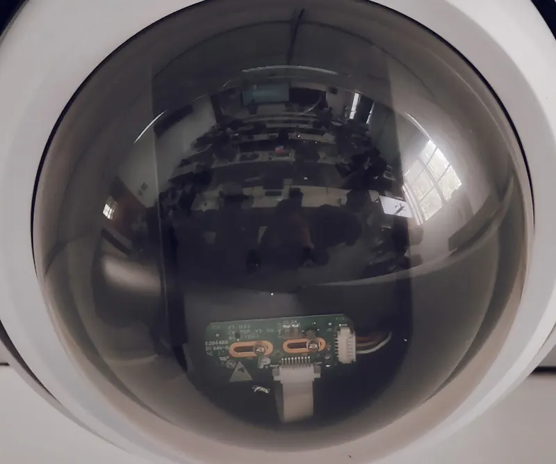
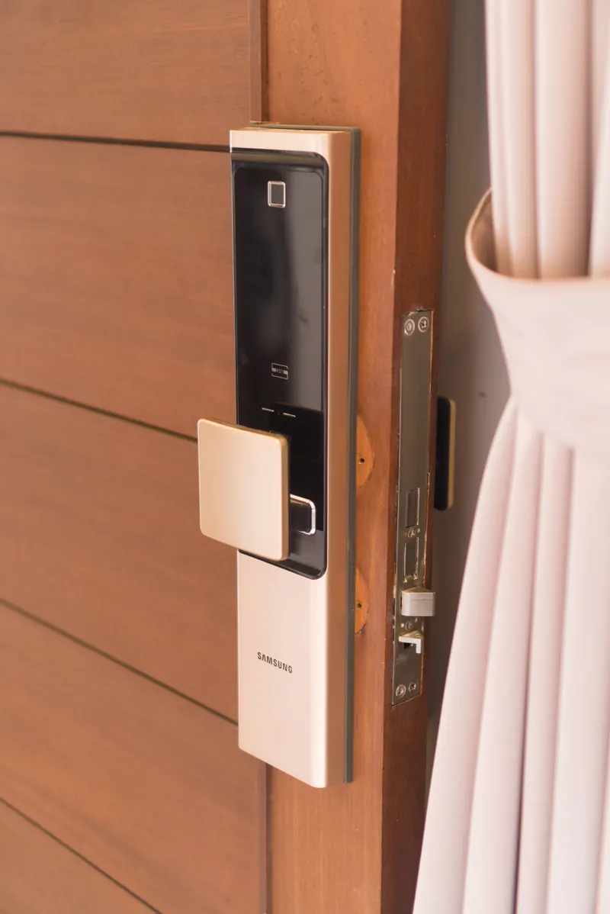
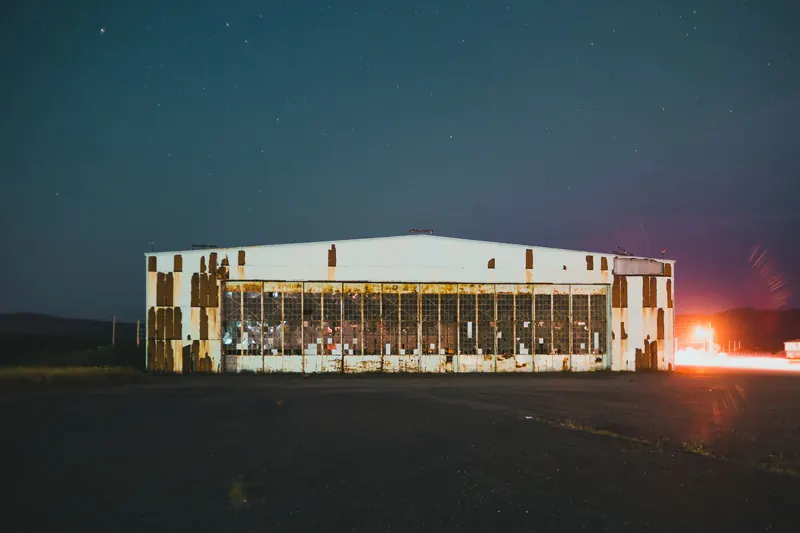
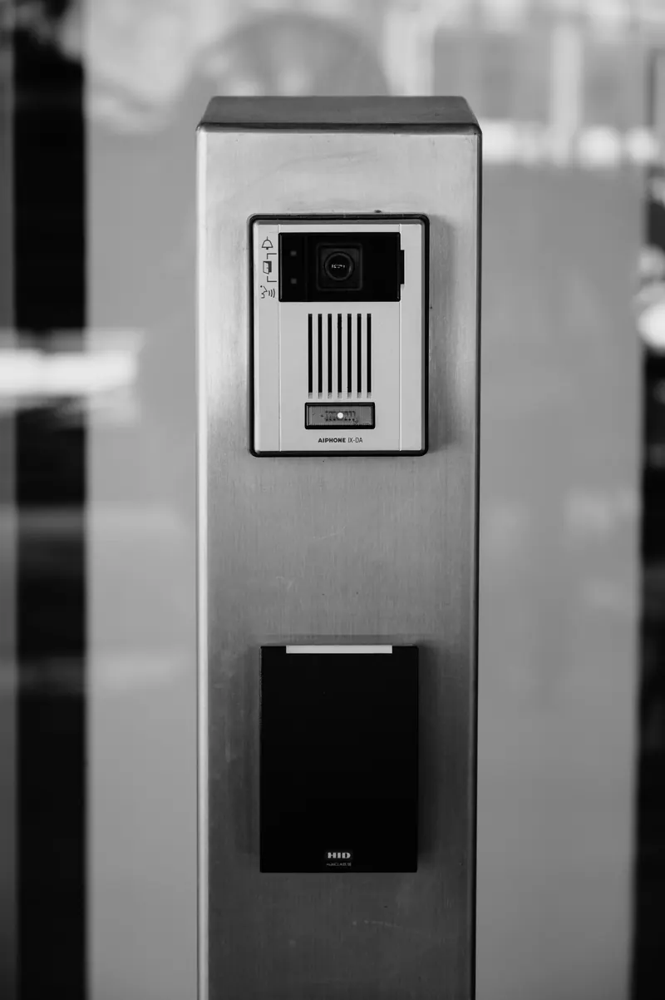

Systems
Security systems for Fort Worth homes and businesses.
Cameras, monitored alarms, commercial CCTV, access control and remote-site towers — installed across Tarrant, Denton, Dallas and Parker counties. Every one of them planned against your property before a price exists.
- Service area
- Fort Worth, Westlake, Southlake, Colleyville, Grapevine, Keller, Trophy Club, Flower Mound, Arlington, Mansfield, Benbrook, Burleson, Aledo, Weatherford
- Typical home system
- 6–10 cameras · $1,800–$4,600 installed · one working day
- Monitoring
- $21.95–$44.95 residential · $29.95–$54.95 commercial · month to month
- Camera-only systems
- No monthly fee — footage records to an NVR you own
- Equipment
- Reolink and Uniview cameras · Alarm.com panels and app
- Warranty
- 1 year installation labour · 2 years minimum on equipment defects
- Licence
- Texas DPS B-24417301 · Technician 91260744
01 / Residential
Residential security camera installation
A home camera system should answer one question at 3 a.m.: what happened, and where. Ours record continuously to an NVR in your own house, so nothing depends on a cloud subscription or a working internet connection.
How many cameras does a house actually need?
Count the approaches, not the walls. A typical Southlake or Colleyville home lands on six to ten: driveway, front door, both side returns, the rear elevation, the garage interior and any gate. The survey settles it — a camera covering nothing is worse than no camera, because you believe you are covered.
- 4K and 8MP Reolink and Uniview cameras, PoE, single-cable runs
- Colour night vision with spotlight on driveways and entries; infrared elsewhere
- Person and vehicle detection on the camera, not in the cloud
- Video doorbell with two-way talk and package detection
- 30 to 90 days of retention, sized to how long you'd realistically look back


02 / Monitoring
Monitored smart security systems
Cameras tell you what happened. An alarm does something about it. Doors, windows, glass-break and motion run on an Alarm.com panel watched by a Five Diamond certified central station, 24 hours a day, every day.
What is the difference between CCTV and a smart security system?
CCTV records what happened; a smart system acts while it happens. Cameras give you evidence and live view with no monthly fee. An alarm adds sensors, a panel and a station that dispatches police. Most properties we survey end up with both, on one app.
- Arm and disarm from your phone, a keypad or a key fob
- Video verification attached to the alarm, so dispatch is a priority response
- Cellular backup — cutting the phone line and the power does nothing
- Smart-home control: locks, garage, lighting and thermostat on one screen
- From $21.95 a month, month to month, cancel with 30 days' notice
03 / Commercial
Commercial CCTV and video surveillance
Dealerships, medical suites, warehouses, self-storage and multi-site retail across the Metroplex. The brief is different from a home: you are protecting inventory, liability and staff, and someone else — your insurer — has an opinion about retention.
How long does commercial footage need to be kept?
Most DFW commercial policies expect 30 days; liability-heavy sites and anything handling cash usually want 60 to 90. We size storage to the requirement in your policy rather than to the recorder that happened to be in the box, and we put the number in the quote.
- Lot, dock, till, yard and entry coverage with licence-plate capable angles
- Multi-site dashboard — every location, one login, one app
- Conduit and cable tray installed to code, inspection-ready
- Scheduled maintenance and lens cleaning, because dust is what kills evidence


04 / Access control
Access control, Fort Worth and DFW
One platform for every door, every credential, every location — cloud-managed, so there is no server in a cupboard for someone to forget to patch. Lock and unlock from anywhere, and see video of who actually walked through.
What does access control replace?
It replaces re-keying. When someone leaves you revoke a credential in ten seconds instead of calling a locksmith and reissuing forty keys. It also replaces the guesswork: every door event carries a name, a timestamp and a clip.
- Mobile credentials — the phone people already carry becomes the key
- Time-limited access for contractors, cleaners and deliveries
- Badge-to-disarm, so one action handles the door and the alarm
- Scheduled locking and shift-based permissions
- Full access history, exportable, with video on every event
05 / Remote sites
Solar CCTV — sale or monthly rental
Build sites, storage yards, equipment compounds and raw acreage: places with something worth taking and no power to protect it with. A self-contained solar and LTE tower goes up in an afternoon and moves to the next site when this one closes.
Buy or rent?
Rent if the site has an end date — most contractors do, and the monthly cost sits inside the job's general conditions. Buy if the yard is permanent. We will tell you which is cheaper over your actual timeline, including the month you would otherwise pay for an empty lot.
- Solar with battery reserve through several overcast days
- LTE — no trenching, no mains, no contractor waiting on a power drop
- Speaker deterrence and live talk-down through the central station
- Relocatable: taken down, moved and re-aimed in half a day
06 / Takeover
Keep your equipment. Change who watches it.
If you are out of contract with a national provider and the panel is compatible, we reprogram it and take over the monitoring. You keep the sensors already screwed to your window frames, and the monthly cost usually falls.
When is a takeover not worth doing?
When the panel is a proprietary board no longer supported, or the sensors are 2G-era and the cellular network they used has been switched off. We check during the survey and tell you plainly — including when replacing is honestly the cheaper answer over five years.
- Compatibility checked on site, free, before you commit to anything
- Existing sensors and keypads retained wherever they still perform
- Moved onto Alarm.com and a Five Diamond station, month to month
- Cameras added to the same app if you want the pair working together
Questions
Before you call anyone.
Four we answer on almost every survey, written out so you don't have to ask.
Do security cameras need internet or a monthly subscription?
No. Our camera systems record continuously to an on-site NVR that you own, so footage survives an internet outage. Internet only adds remote viewing on your phone. Subscriptions apply to alarm monitoring, which starts at $21.95 a month, never to the cameras themselves.
Can the cameras tell a person from an animal?
Yes. Person and vehicle detection runs on the camera processor rather than in the cloud, so a cat, a shadow or a branch in the wind will not trigger an alert. That single change is what stops people muting notifications and losing the benefit of the system entirely.
Will drilling for cameras damage my brick or stucco?
Penetrations go through mortar joints wherever possible, never through the face of a brick, and every one is sealed with colour-matched exterior sealant. On stucco we core cleanly and patch. If a camera is ever removed, the repair is a mortar refill, not a visible scar.
Is this the same as a kitchen renovation firm's smart-home package?
No. Builders' smart-home bundles are wired at rough-in by an electrician and rarely surveyed for coverage. We are a licensed security company: the plan is drawn against sightlines and approaches, and the central station connection is regulated work that a low-voltage bundle does not include.
Next
Which of the six you need is a survey question.
Two hours at your property, at the hour that worries you, and you keep the drawn plan either way.